1. Introduction to Machine Learning
Contents
1. Introduction to Machine Learning¶
Lectruer: Dr.Fangli Ying (https://fangli-ying.github.io/)
2023.03.01 Class: Introduction to Engineering
An Overview¶
Machine learning is a significant area of study in the modern world, gaining popularity each day as an emerging trend that showcases human advancements made in recent decades. It is contributing to the developments and technologies of todays world alongside Artificial Intelligence and Data Science. Many industries and companies utilize machine learning, such as web browsers and YouTube, which have features like autocorrect and recommendation systems. Machine learning is excelling in numerous fields and has a variety of applications in almost every major industry. Before diving into mastering machine learning, understanding theoretical definitions from experts is necessary. – “This paragraph is generated from ChatGPT”
The first definition
“The field of study that gives computers the ability to learn without being explicitly programmed” (Arthur Samuel, 1959).
A second or modern interpretation of machine learning can be viewed as follows:
The Second definition
“A computer program is said to learn from experience E with respect to some class of tasks T and performance measure P, if its performance at tasks in T, as measured by P, improves with experience E.” (Tom Mitchell).
Machine learning has many definitions. But, the above two theoretical explanations should give most beginners an intuitive understanding of what we can expect from these machine learning methodologies.
Video: What is Machine Learning
Machine Learning VS Artificial Intelligence¶
Artificial Intelligence(AI) refers to all tasks in which a computer can make decisions by mimicking human, evolutionary, genetic, or physical processes. It includes tasks such as driving a car, finding a route, diagnosing a patient, or recommending a movie. Machine learning(ML) is a part of artificial intelligence that focuses on tasks where a computer can make decisions based on data, without being explicitly programmed. While the definitions of artificial intelligence and machine learning are often confused, machine learning is a subset of artificial intelligence. Deep learning (DL) is a subset of ML that uses artificial neural networks to process large amounts of data and solve complex problems. DL is based on the structure and function of the human brain, and it has been successful in areas such as computer vision, natural language processing, and speech recognition.
In summary, AI is the broader field of creating intelligent systems, ML is a subset of AI that enables machines to learn and improve on their own through experience, and DL is a subset of ML that uses artificial neural networks to process large amounts of data and solve complex problems.
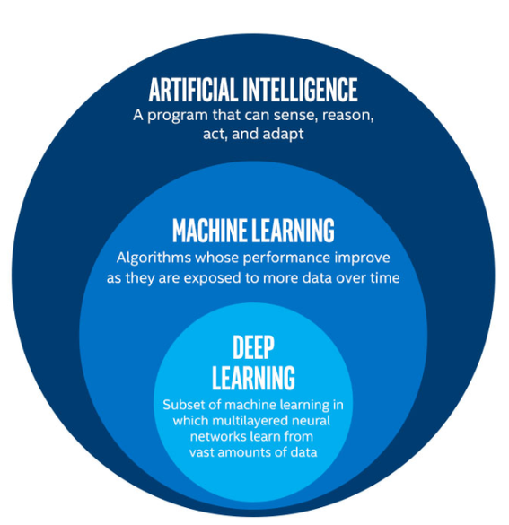
Once I saw an article titled “Will neural networks replace machine learning?” on some hipster media website. The general rule is to compare things on the same level. That’s why this phase sounds like “will the wheels replace cars”
How Machine Learning Works¶
Machine learning is the set of all tasks in which a computer can make decisions based on data. What does this mean? Let’s go back to looking at how humans make decisions. In general terms, we make decisions in the following two ways:
By using logic and reasoning
By using our experience
For example, imagine that we are trying to decide what car to buy. We can look carefully at the features of the car, such as price, fuel consumption, and navigation, and try to figure out the best combination of them that adjusts to our budget. That is using logic and reasoning. On the other hand, if we ask all of our friends what cars they own, and what they like and dislike about them, we form a list of information and use that list to decide, then we are using experience (in this case, our friends experiences).
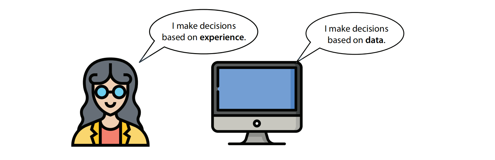
Machine learning represents the second method: making decisions using experience. In computer lingo, the term for experience is data. Therefore, in machine learning, computers make decisions based on data. Thus, any time we get a computer to solve a problem or make a decision using only Data, we are doing machine learning.
In short, set of techniques for giving machines the ability to to find patterns and extract rules from data, in order to:
Identify or classify elements
Detect tendencies
Make predictions
As more data is fed into the system, results get better: performance improves with experience.
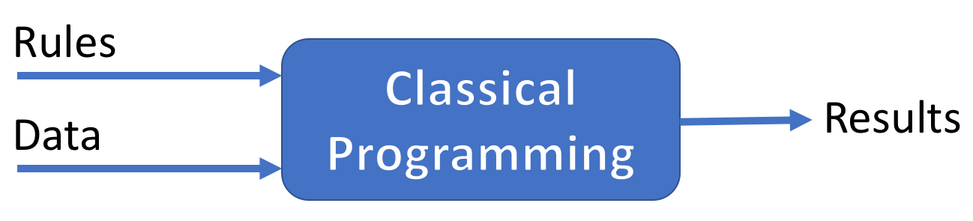
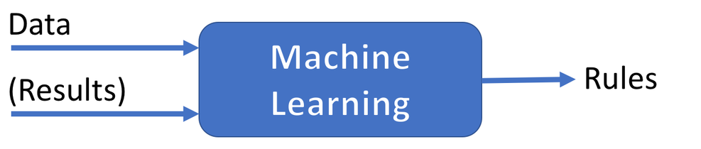
Basic Terminologies¶
The greater variety in the samples you have, the easier it is to find relevant patterns and predict the result. Therefore, we know that in machine learning we get the computer to learn how to solve a problem using Data, the way the computer solves the problem is by using the data to build a model. Other than data, there are several components that build up machine learning Model, to be clear let us see the process of how machine learning model is created.

In the figure above, the first step that we need to do to create a model is to fed the machine learning algorithm with training data. An Algorithm is a procedure, or a set of steps, used to solve a problem or perform a computation. Machine learning algorithm defines the method or way on how it learns / trains through the data, Behind the hood it is represented as a mathematical formula. After the training process, it resulting on a machine learning model. Machine learning model is a program or set of rules that is created after the machine learning algorithm learns from data and can be used to make predictions, behind the hood it is actually represented in the form of mathematical function.
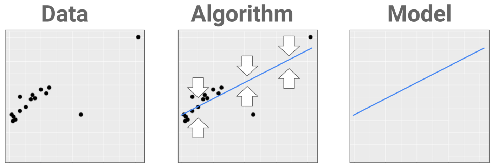
We defined Features as the properties or characteristics of the data. If our data is in a table, the features are the columns of the table. Features could even be the colors of the pixels in a certain image. This is what describes our data. Some features are special, though, and we call them labels. In short, any property or characteristic of the data that the model can use to make predictions is called feature.
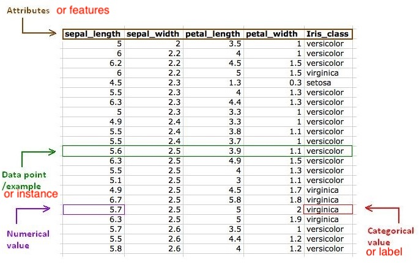
Learning in machine learning is purely mathematical, and it ends by associating certain inputs with certain outputs. It has nothing to do with understanding what the algorithm has learned. (When humans analyze data, we build an understanding of the data to a certain extent.) The learning process is often described as training because the algorithm is trained to match the correct answer (the output) to every question offered (the input).
Starts with data¶
Machine learning starts with data — numbers, photos, or text, like bank transactions, pictures of people or even bakery items, repair records, time series data from sensors, or sales reports. The data is gathered and prepared to be used as training data, or the information the machine learning model will be trained on. The more data, the better the program.
Reasons for success of machine learning:
Explosion of available data.
Huge progress in computing power.
Refinement of many existing algorithms.
Availability of sophisticated tools for building ML-powered systems.
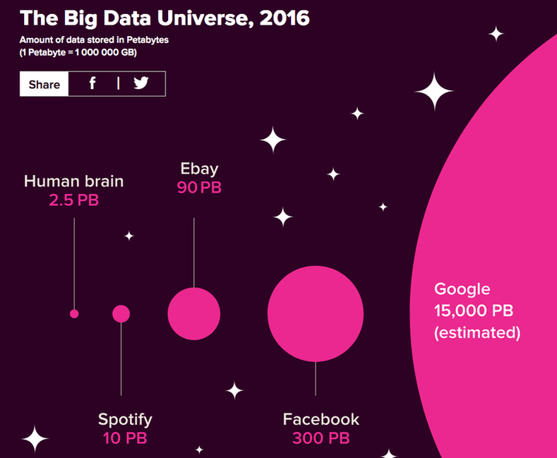
A predictive machine learning model aims to predict the labels in data, which is the guess the model makes. There are two types of data: labeled and unlabeled. Labels depend on the problem context, such as predicting a pet’s type, health, or age. Labeled data has a tag or label, while unlabeled data has no tag. Examples of unlabeled data include photos, audio recordings, videos, news articles, tweets, and x-rays. Labeled data takes unlabeled data and adds meaningful tags or labels, such as identifying a cat or dog in a photo, or detecting a tumor in an x-ray. The two branches of machine learning are supervised learning (using labeled data) and unsupervised learning(using unlabeled data).
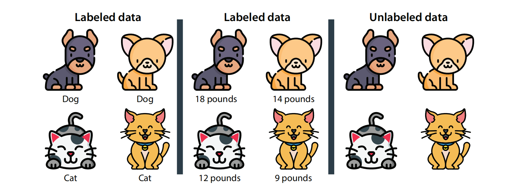
Types of machine learning¶
As we’ve learned before, machine learning is common sense for a computer. Machine learning roughly mimics the process by which humans make decisions based on experience, by making decisions based on previous data. Naturally, programming computers to mimic the human thinking process is challenging, because computers are engineered to store and process numbers, not make decisions.
This is the task that machine learning aims to tackle. Machine learning is divided into several branches, depending on the type of decision to be made. Machine learning essentially falls into three categories according to the way they operate: supervised, unsupervised, and reinforcement learning. The appropriate category is determined by the type of data at hand, and depends largely on whether it is labeled or unlabeled.
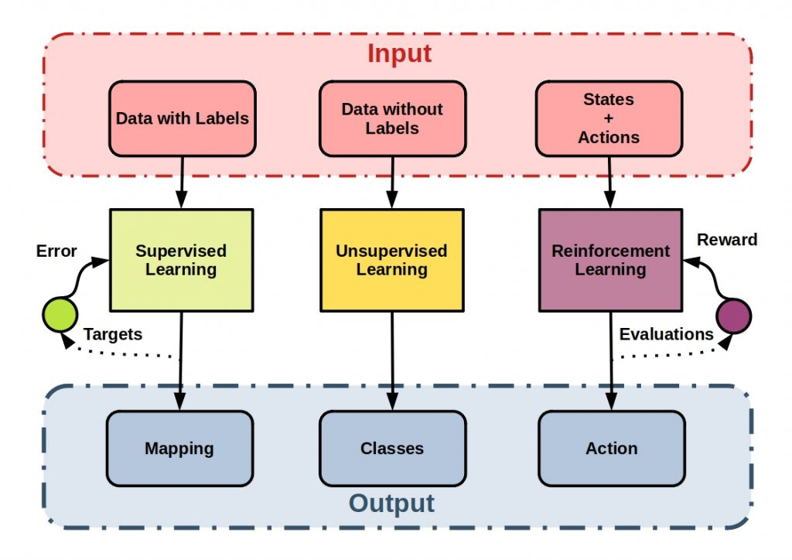
Supervised Learning: expected results (called labels or tags) are given to the system along with training data.
Unsupervised Learning: training data comes without the expected results. The system must discover some structure in the data by itself.
Reinforcement Learning: without being given an explicit goal, the system’s decisions produce a reward it tries to maximize.
Supervised Leanring¶
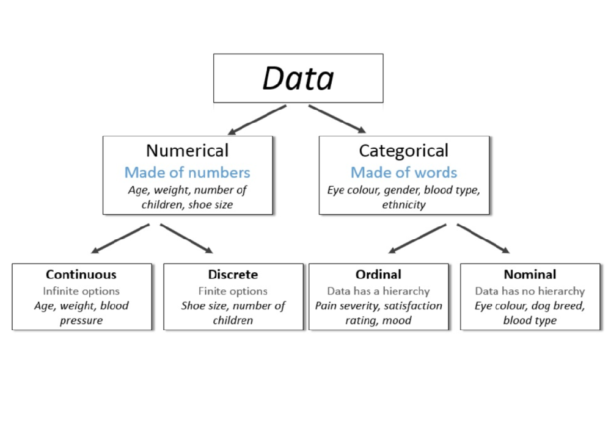
A supervised learning model predicts the label of a new data point. In this case, the data point corresponds to some shapes (rectangle,circle,triangle,hexagon), and the supervised learning algorithm is trained to predict that this data point does, indeed, correspond to a triangle and circle.
Now, notice that in the figure, we have two types of labeled datasets. In the dataset in the middle, each data point is labeled with the weight of the animal. In this dataset, the labels are numbers. In the dataset on the left, each data point is labeled with the type of animal (dog or cat). In this dataset,the labels are states. Numbers and states are the two types of data that we’ll encounter in supervised learning models. We call the first type numerical data and the second type categorical data.
Numerical data is any type of data (continuous value, e.g. can be any range of values) that uses numbers such as 4, 2.35, or –199. Examples of numerical data are prices, sizes, or weights.
Categorical data is any type of data that uses categories, or states, such as male/female or cat/dog/bird. For this type of data, we have a finite set of categories to associate to each of the data points.
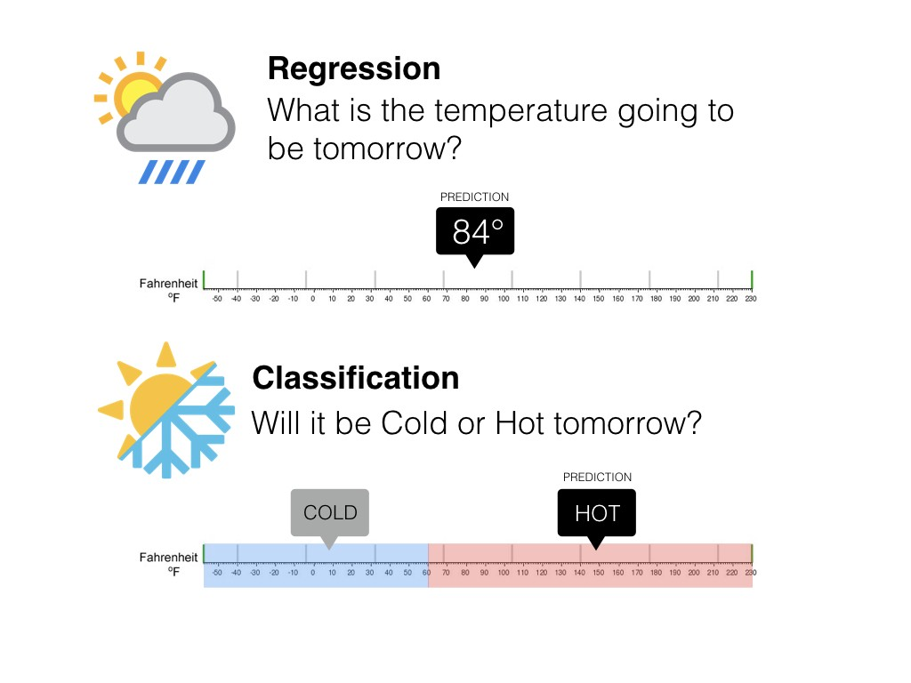
This gives rise to the following two types of supervised learning models: Regression models are the types of models that predict numerical data. The output of a regression model is a number, such as the number of temperature in weather forecasting. Classification models are the types of models that predict categorical data. The output of a classification model is a category, or a state, such as the condition of the weather (hot or cold).
Classification Models¶
Classification is an algorithm that finds functions that help divide the dataset into classes based on various parameters. When using a Classification algorithm, a computer program gets taught on the training dataset and categorizes the data into various categories depending on what it learned.
Classification algorithms find the mapping function to map the “x” input to “y” discrete output. The algorithms estimate discrete values (in other words, binary values such as 0 and 1, yes and no, true or false, based on a particular set of independent variables. To put it another, more straightforward way, classification algorithms predict an event occurrence probability by fitting data to a logit function.
The system predicts discrete values: input is categorized. 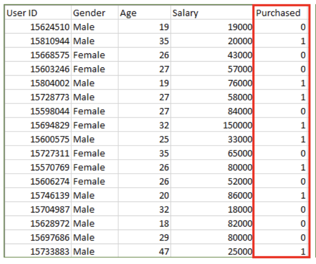
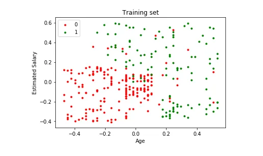
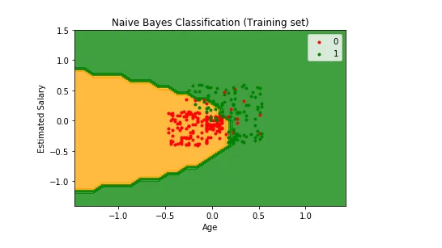
Input: Gender, Age, Salary
Output: Purchased i.e. 0 or 1; 1 means yes the customer will purchase and 0 means that the customer won’t purchase it.
For example in above figures, Output – Purchased has defined labels i.e. 0 or 1; 1 means the customer will purchase, and 0 means that the customer won’t purchase. The goal here is to predict discrete values belonging to a particular class and evaluate them on the basis of accuracy.
Classification types¶
Binary: only two possibles classes. Examples: cat/not a cat, spam/legit mail, benign/malignant tumor.
Multiclass: several mutually exclusive classes. Example: handwritten digit recognition.
Multilabel: several non-mutually exclusive classes. Example: face recognition.
Classification algorithms¶
The types of Classification algorithms typically used in Machine Learning:
• Decision Tree Classification: This type divides a dataset into segments based on particular feature variables. The divisions’ threshold values are typically the mean or mode of the feature variable in question if they happen to be numerical.
• K-Nearest Neighbors: This Classification type identifies the K nearest neighbors to a given observation point. It then uses K points to evaluate the proportions of each type of target variable and predicts the target variable that has the highest ratio.
• Logistic Regression: This classification type isn’t complex so it can be easily adopted with minimal training. It predicts the probability of Y being associated with the X input variable.
• Naïve Bayes: This classifier is one of the most effective yet simplest algorithms. It’s based on Bayes’ theorem, which describes how event probability is evaluated based on the previous knowledge of conditions that could be related to the event.
• Random Forest Classification: Random forest processes many decision trees, each one predicting a value for target variable probability. You then arrive at the final output by averaging the probabilities.
• Support Vector Machines: This algorithm employs support vector classifiers with an exciting change, making it ideal for evaluating non-linear decision boundaries. This process is possible by enlarging feature variable space by employing special functions known as kernels.
Regression Models¶
Regression finds correlations between dependent and independent variables. Therefore, regression algorithms help predict continuous variables such as house prices, market trends, weather patterns, oil and gas prices (a critical task these days!), etc.
The Regression algorithm’s task is finding the mapping function so we can map the input variable of “x” to the continuous output variable of “y.”
The system predicts continuous values. Examples: temperature forecasting, asset price prediction…
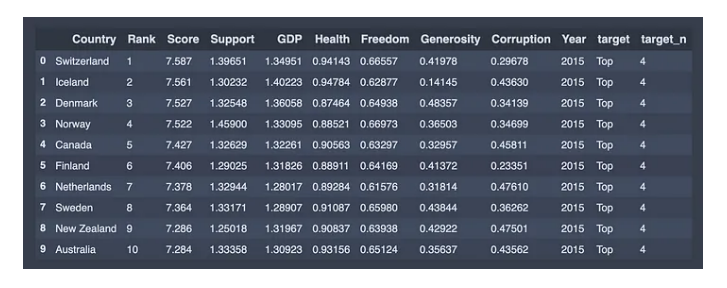 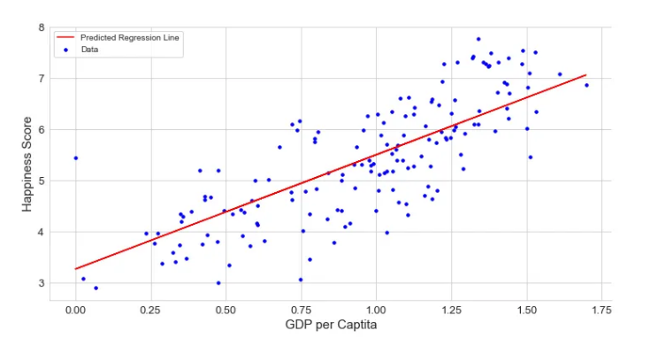
Input: GPA,…
Output: Happiness Scores
For example in above Figure, Output – Happiness is not having any discrete value but is continuous in a particular range. The goal here is to predict a value as much closer to the actual output value as our model can and then evaluation is done by calculating the error value. The smaller the error the greater the accuracy of our regression model.
Blog: Regression
Regression algorithms¶
Here are the types of Regression algorithms commonly found in the Machine Learning field:
• Decision Tree Regression: The primary purpose of this regression is to divide the dataset into smaller subsets. These subsets are created to plot the value of any data point connecting to the problem statement.
• Principal Components Regression: This regression technique is widely used. There are many independent variables, or multicollinearity exists in your data.
• Polynomial Regression: This type fits a non-linear equation by using the polynomial functions of an independent variable.
• Random Forest Regression: Random Forest regression is heavily used in Machine Learning. It uses multiple decision trees to predict the output. Random data points are chosen from the given dataset and used to build a decision tree via this algorithm.
• Simple Linear Regression: This type is the least complicated form of regression, where the dependent variable is continuous.
• Support Vector Regression: This regression type solves both linear and non-linear models. It uses non-linear kernel functions, like polynomials, to find an optimal solution for non-linear models.
UnSupervised Learning¶
- Blog: [More difficult examples](https://github.com/ageron/handson-ml2/blob/master/09_unsupervised_learning.ipynb)
File "<ipython-input-1-cbbb3de49c8d>", line 1
- Blog: [More difficult examples](https://github.com/ageron/handson-ml2/blob/master/09_unsupervised_learning.ipynb)
^
SyntaxError: invalid syntax
…
Summary¶

Here we have seen a few simple examples of some of the basic types of machine learning approaches. Needless to say, there are a number of important practical details that we have glossed over, but I hope this section was enough to give you a basic idea of what types of problems machine learning approaches can solve.
In short, we saw the following:
Supervised learning: Models that can predict labels based on labeled training data
Classification: Models that predict labels as two or more discrete categories
Regression: Models that predict continuous labels
Unsupervised learning: Models that identify structure in unlabeled data
Clustering: Models that detect and identify distinct groups in the data
Dimensionality reduction: Models that detect and identify lower-dimensional structure in higher-dimensional data
In the following sections we will go into much greater depth within these categories, and see some more interesting examples of where these concepts can be useful.
All of the figures in the preceding discussion are generated based on actual machine learning computations; the code behind them can be found in my github resource